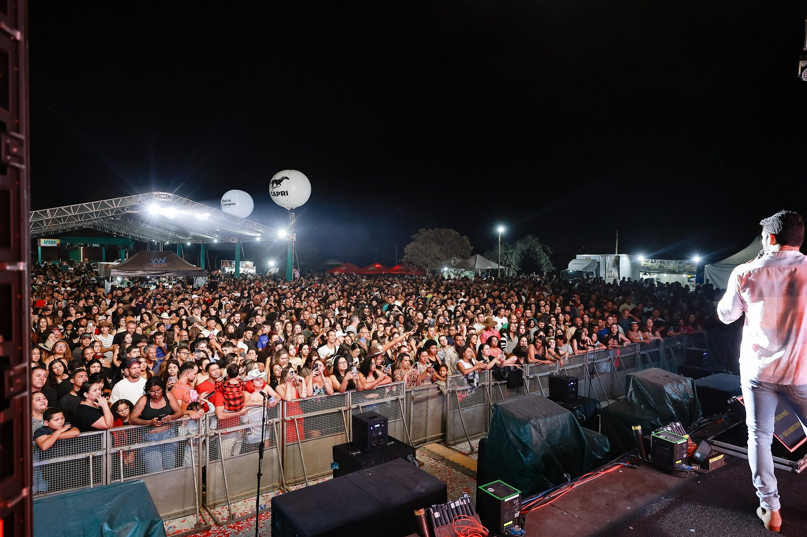
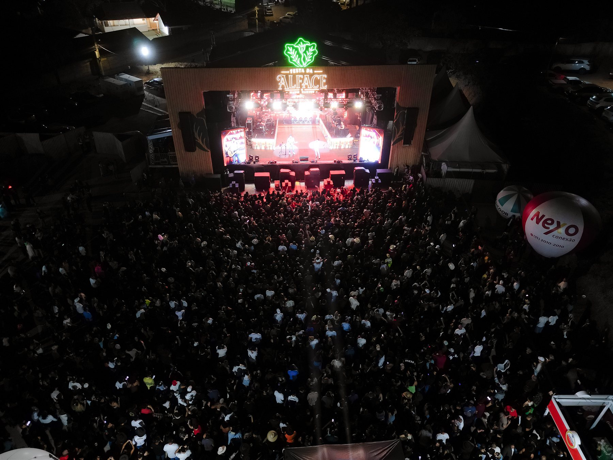
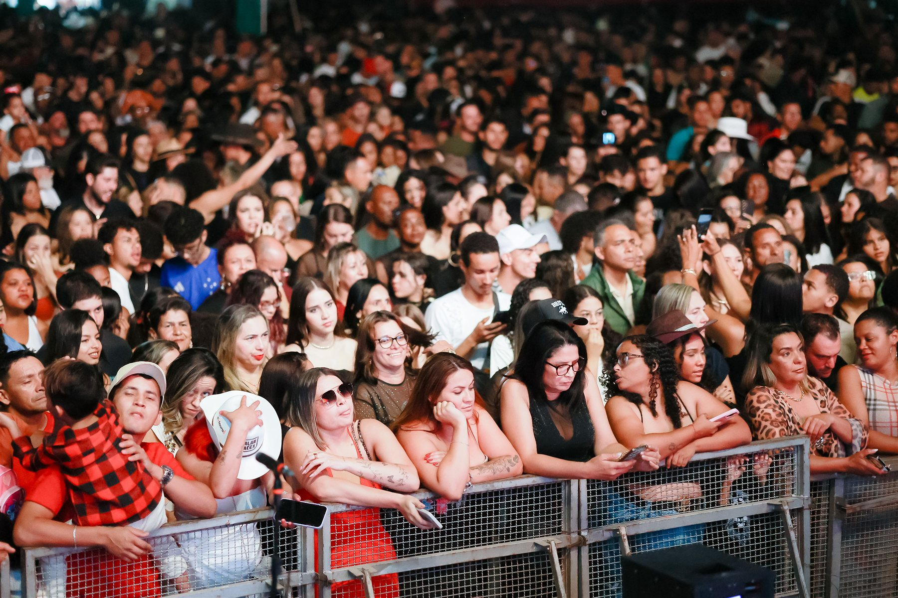
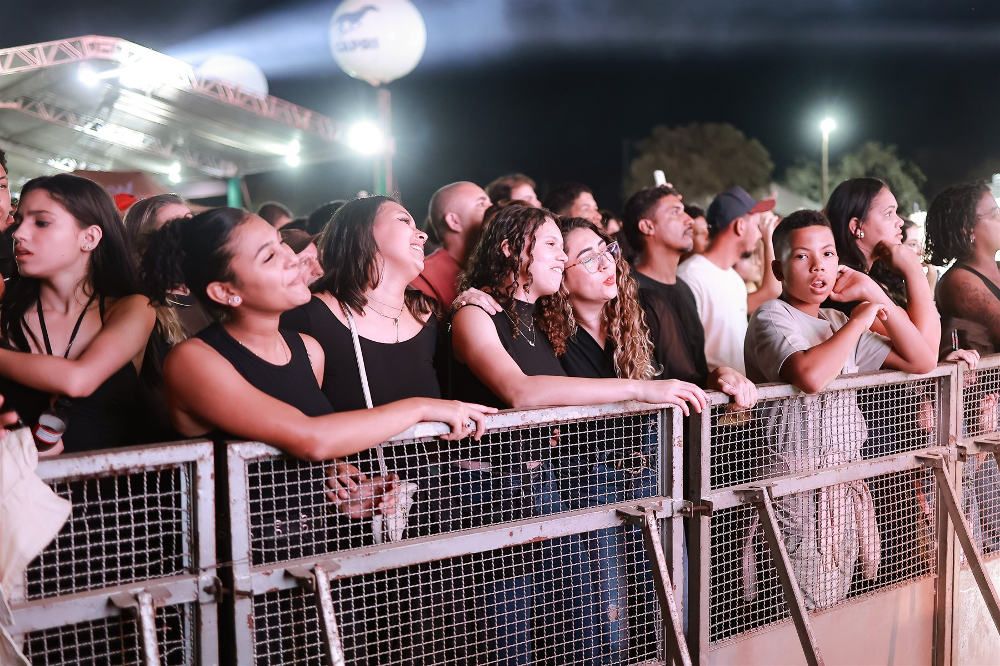
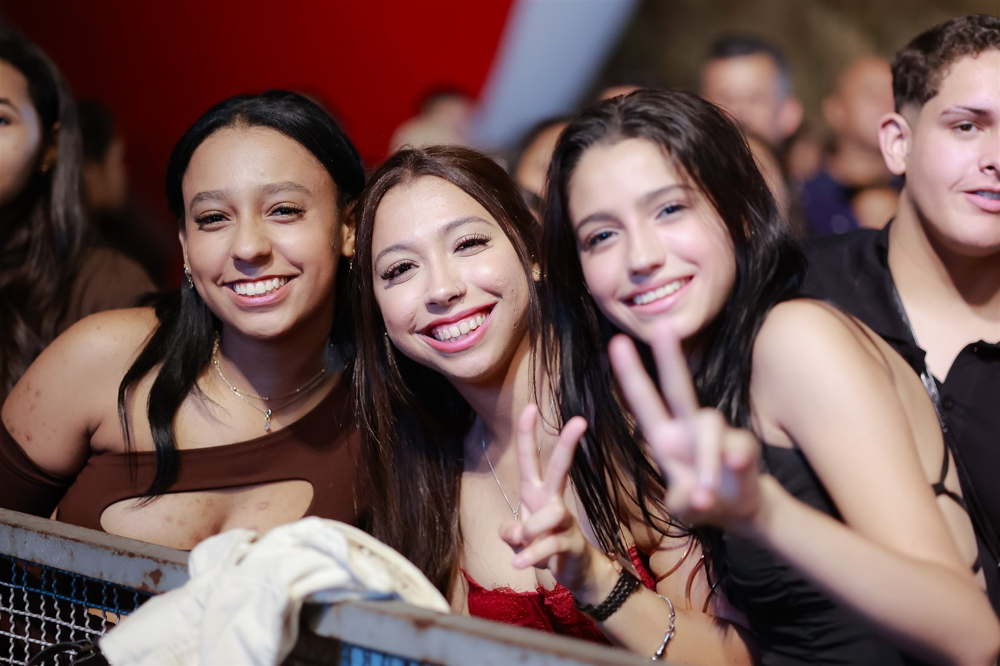
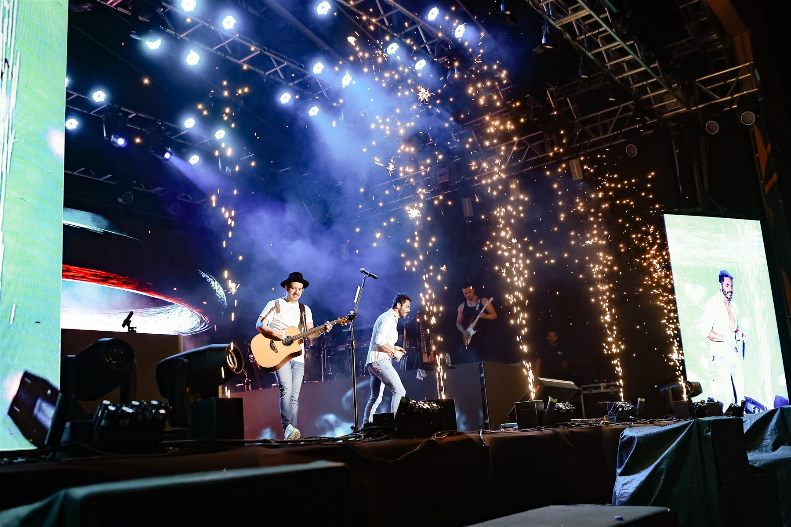
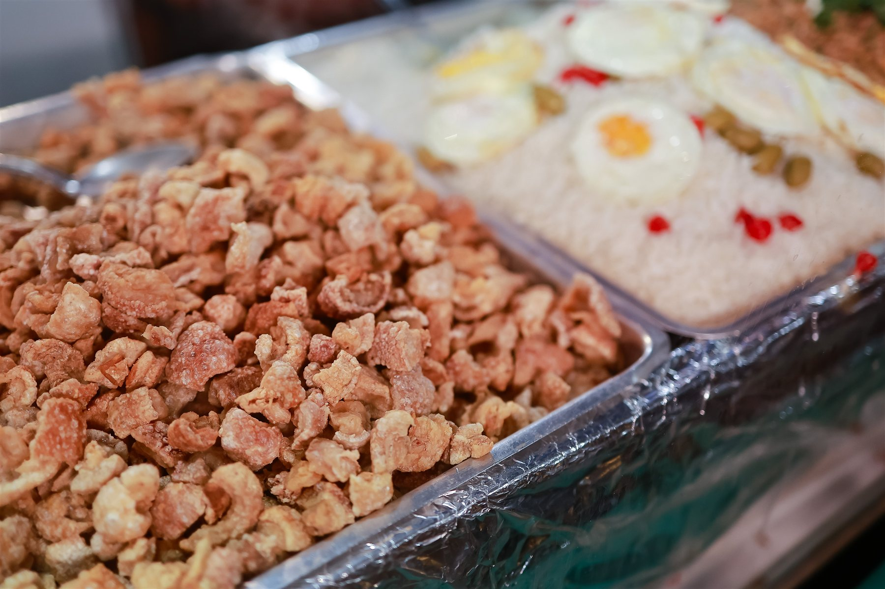
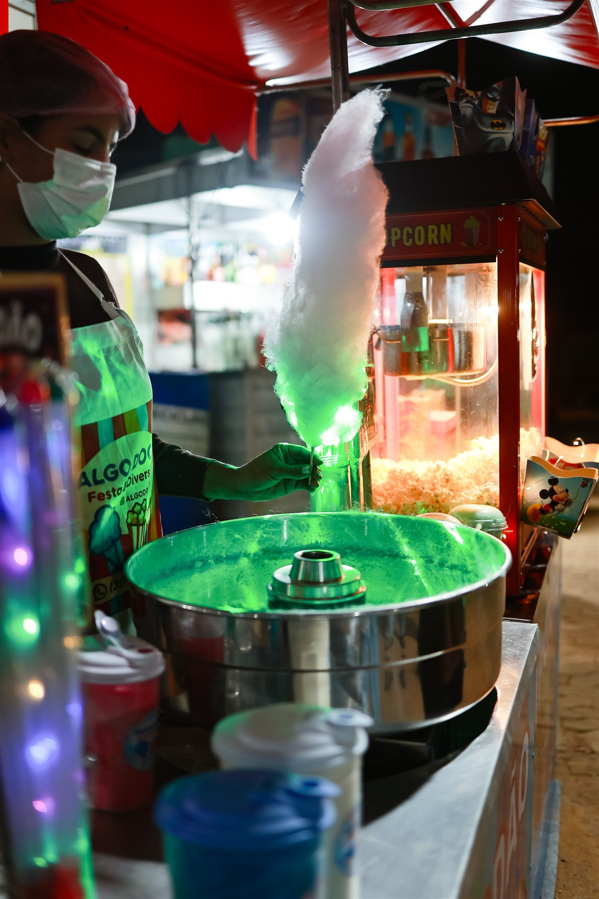
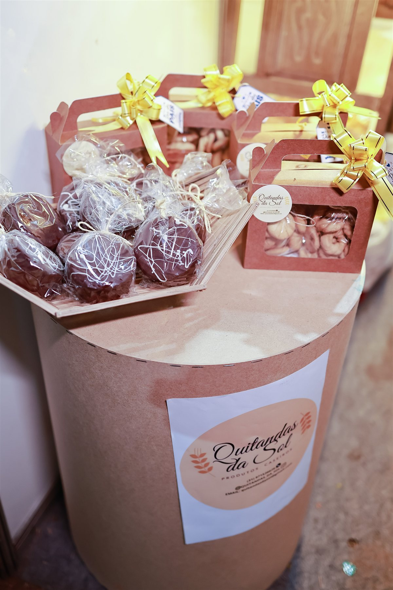
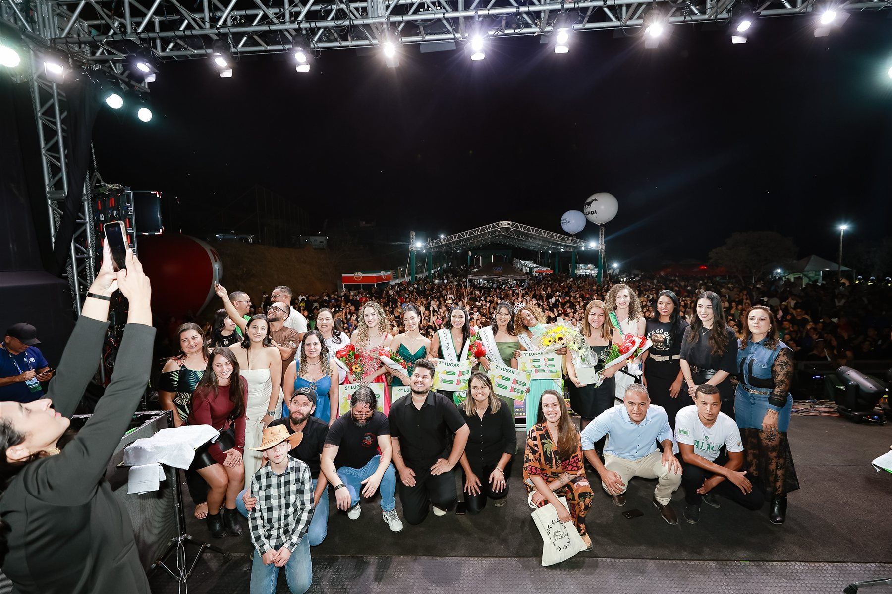

Mário Campos / MG Retrospectiva 2026
Festa da AlfaceMemórias da nossa terra
e da nossa gente.
Um reencontro com os momentos da edição 2026.
Explore as fotografias01 / Nossa memória
Mário Campos, Minas GeraisUma edição
para recordar.
Este espaço reúne a memória da Festa da Alface 2026 e valoriza a relação de Mário Campos com a agricultura e seus produtores. Explore os registros e reencontre os momentos dessa edição.
- Período divulgado
- 6 a 10 de agosto de 2026
- Local divulgado
- Centro Comunitário de Bom Jardim
Mário Campos / MG
A edição foi divulgada com entrada gratuita.

02 / A energia do encontro
Rostos que fazem a festaA nossa gente.
A nossa festa.
Entre a primeira fila e os encontros pelo caminho, a memória também mora nos detalhes.




04 / Sabores & detalhes
Outros olhares sobre a festaUm encontro de
muitos sabores.
Das quitandas ao preparo nas barracas, pequenos registros completam a história.



05 / Acervo selecionado
Festa da Alface 2026A festa
em imagens.
Um olhar sobre a edição 2026. Navegue pelas fotos e abra cada imagem para ver os detalhes.
